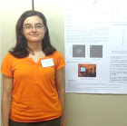

 Sandra Arranz-Paraíso |
| Serrano-Pedraza, I., Arranz-Paraíso, S., Romero-Ferreiro, V., Read, J., & Bridge, H. (2015). Short-term monocular deprivation reduces inter ocular surround suppression. Journal of vision, 15(12), 379. |
| Read, J., Busby, N., Herbert, W., Arranz-Paraíso, S., Jones, L., Nityananda, V., Tarawneh, G. & Serrano-Pedraza, I. (2015). Motion encoding in human being and praying mantis investigated with a masking paradigm. Journal of vision, 15(12), 483. |
| Serrano-Pedraza, I., Arranz-Paraiso, S., Romero-Ferreiro, V., & Read, J. (2015). Inter-scale suppression and facilitation in motion-discrimination are unaffected by dichoptic presentation. Perception (Vol. 44, pp. 200-201). |
| Serrano-Pedraza, I., Arranz-Paraíso, S., & Derrington, A. M. (2014). Duration thresholds show low-pass suppression of fine-scale motion-discrimination. Perception ECVP abstract, 43, 41-41. |